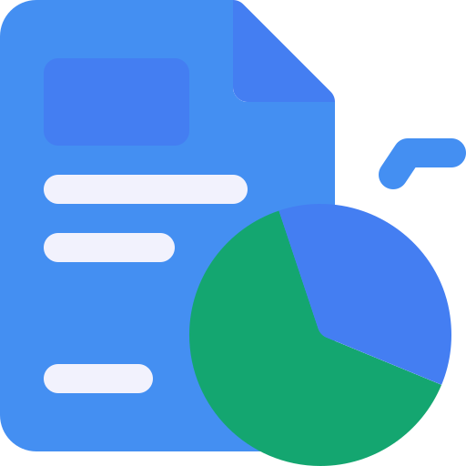
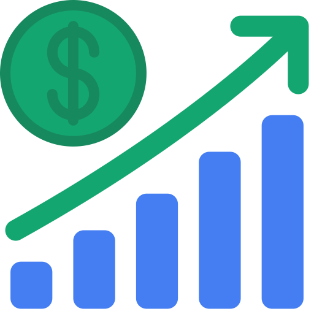
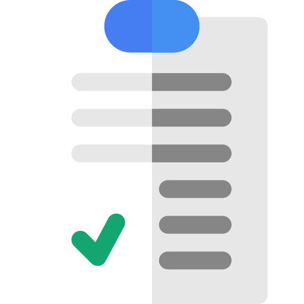

Silvana Guardia
Business Intelligence
Transformo datos complejos en decisiones rentables.
Transformo datos complejos en decisiones rentables.
Instituto Sise - Estudiante 2025-2027
Platzi - 2024
Programa one5 - Alura/Oracle - 2023
Transformo datos complejos en decisiones estratégicas claras.
Diseño estructuras eficientes, seguras y escalables.
Creo sistemas de métricas para decisiones basadas en datos.
Diseño dashboards claros para entender y accionar rápido.


Problema: La fuerza de ventas registraba sus interacciones en hojas de cálculo aisladas y desordenadas. La gerencia carecía de visibilidad sobre el "Pipeline" (embudo de ventas), lo que provocaba que muchas oportunidades se enfriaran por falta de seguimiento y que las proyecciones de ingresos fueran imprecisas e informales.
Solución: Desarrollo de un ecosistema integral de ventas que consta de:
AppSheet ➡️ Google Sheets (Escritura inmediata). Google Sheets ➡️ Looker Studio (Lectura y modelado de KPIs).
"Aprendí que categorizar a los clientes por "Rubro" y "Ciudad" es vital para descubrir en qué mercados la empresa es realmente competitiva."

Problema: El equipo de ventas y operaciones ingresaba datos manualmente con errores críticos: nombres en minúsculas, correos electrónicos sin formato válido y registros duplicados. Esto causaba que las automatizaciones de correo fallaran y que los reportes de BI mostraran datos fragmentados.
Solución: Desarrollo de un script avanzado en Google Apps Script que actúa como un "filtro de calidad". El script estandariza automáticamente toda la base de datos con un solo clic.
Eliminación del error humano en la fase de entrada de datos, garantizando que el 100% de los contactos sean accionables para campañas de marketing.
Entendí que la automatización no solo sirve para crear cosas nuevas, sino para mantener el orden. "La calidad del output depende totalmente de la calidad del input".